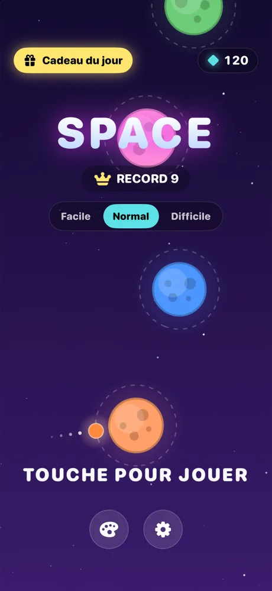
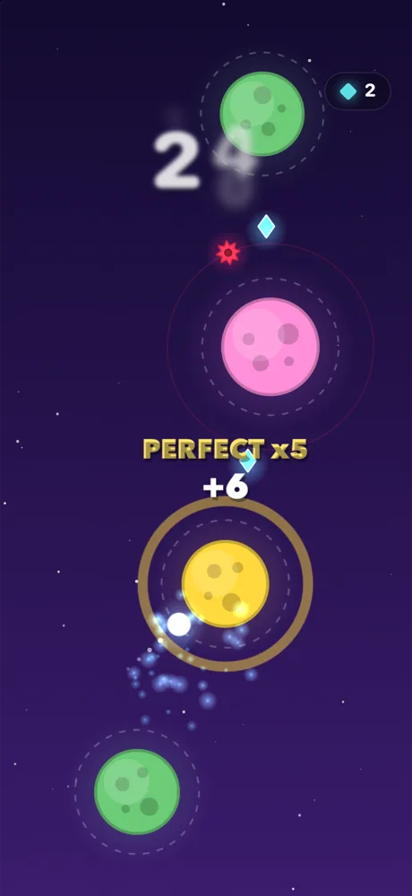
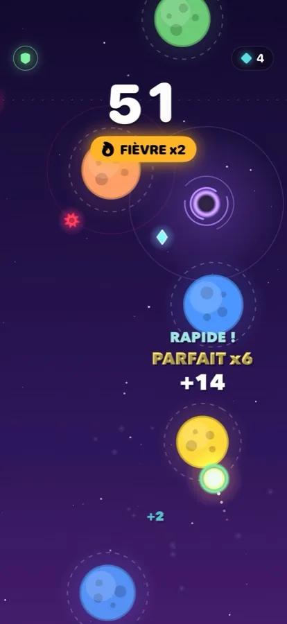
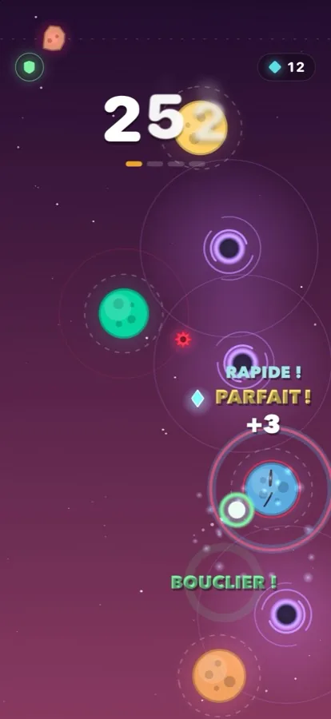
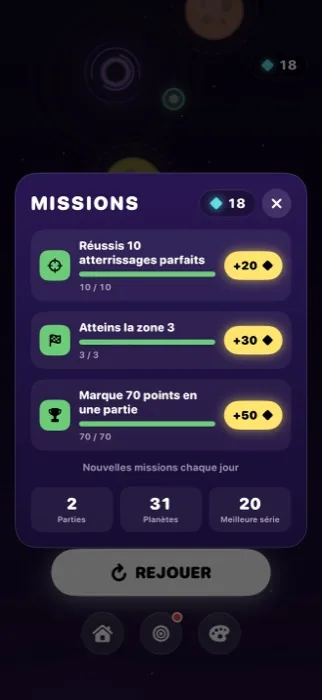
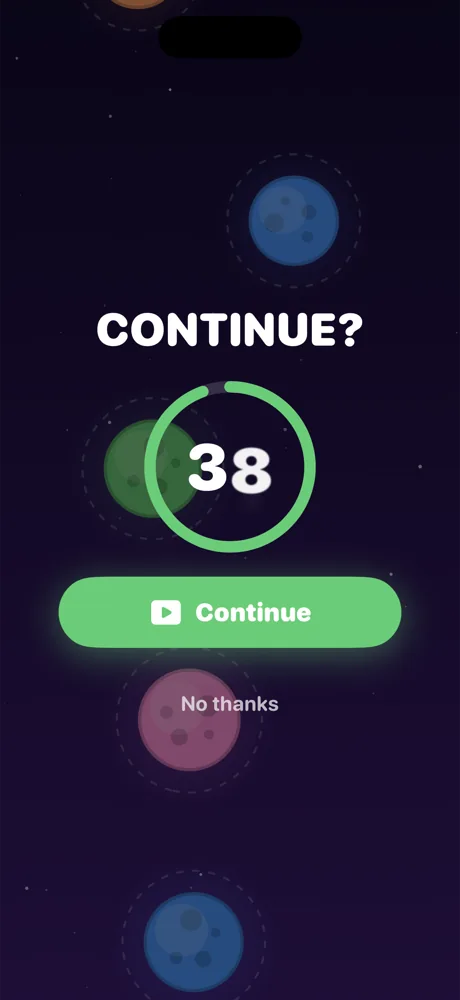
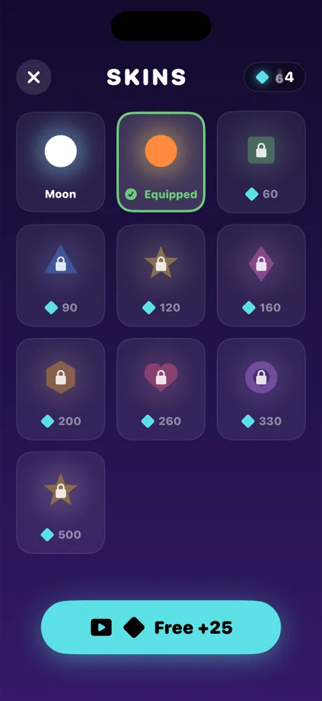

Jeu iPhone · Arcade à un doigt
Un tap. Une orbite. Pas de deuxième essai.
La bille tourne autour d’une planète. Touchez : elle part tout droit. Si elle frôle la suivante, elle s’y accroche. Sinon, c’est le vide. Et l’écran, lui, n’attend pas.
- Commandes
- 1 doigt
- Partie
- 30 s à 3 min
- Compte
- Aucun
Une réplique jouable des règles du jeu. Touchez l’écran, ou appuyez sur Espace : la bille part dans la direction où elle se trouve.
00 · Le film
Trente secondes, une orbite.
La règle, le score, la montée dans les zones et les écrans du jeu. La partie qui tourne dans le téléphone est la réplique jouable de cette page ; les écrans du milieu sont des captures du jeu sur iPhone. Il démarre sans le son ; mettez-le pour la musique.
01 · La règle
On comprend en deux secondes. On vise juste en deux cents parties.
-
1Elle tourne
La bille fait le tour de sa planète, dans un sens ou dans l’autre. Chaque planète a sa vitesse.
-
2Vous touchez
Elle part tout droit, dans la direction où elle se trouve à cet instant. Pas de visée, pas de puissance : tout est dans le moment.
-
3Elle s’accroche
Si elle passe assez près d’une planète plus haute, elle se met à tourner autour. Visez le centre : c’est un parfait.
Et pendant ce temps, l’écran monte tout seul. Rester trop longtemps sur une planète, c’est la voir sortir par le bas. Une lueur rouge prévient quand ça devient urgent.
02 · Le score
Chaque atterrissage se note.
Atteindre la planète suivante rapporte un point. Le reste se mérite : viser le centre, sauter une planète, frôler une mine, repartir sans attendre.
- +1
Planète suivante
La base. Une planète, un point.
- +1 à +5
Parfait
Une trajectoire qui vise le centre. Le bonus grimpe à chaque parfait d’affilée, jusqu’à +5.
- +1 / planète
Bond
Sauter une planète pour atteindre la suivante. Risqué, donc payé.
- +1
Frôlé
Passer tout près d’un danger sans le toucher. Deux fois au maximum par vol.
- +1
Rapide
Repartir avant d’avoir fait un tour complet.
- ×2
Fièvre
Quatre parfaits d’affilée : points et gemmes doublés jusqu’au premier atterrissage imparfait.
Le ressort secret : une note qui monte.
Pendant une série de parfaits, chaque atterrissage joue une note plus haute, sur une gamme pentatonique. On n’entend pas une récompense, on la sent arriver.
03 · La montée
Plus on monte, plus le ciel se complique.
Les planètes rétrécissent, tournent plus vite et s’écartent. Puis les dangers arrivent, un par un, à des hauteurs précises (niveau Normal).
Planètes 1 à 3
L’échauffement
Les trois premières sont volontairement faciles, et une aide s’affiche pendant les trois premières parties.
Dès la 7e
Les mines
Elles tournent autour de certaines planètes et tuent au contact pendant le vol. Plus haut, elles vont par deux, face à face.
Dès la 13e
Les planètes mobiles
Elles glissent de gauche à droite. Il faut viser là où elles seront, pas là où elles sont.
Dès la 18e
Les astéroïdes
Ils traversent l’écran entre deux planètes, le long d’une ligne en pointillés. Lancer au bon moment, ou attendre.
Dès la 24e
Les planètes instables
Fissurées, liserées de rouge. Un anneau se referme dès qu’on s’y pose : à zéro, elles explosent.
Dès la 31e
Les trous noirs
Leur halo courbe la trajectoire de la bille, leur cœur la détruit. On peut s’en servir, si on ose.
Et après ?
Pas de plafond
Toutes les dix planètes, une nouvelle zone change les couleurs du ciel. Après la montée en difficulté, la rotation et le défilement continuent d’accélérer.
04 · Niveaux
Quatre niveaux, quatre records.
Chaque niveau règle la même partie autrement. L’Extrême se mérite : il s’ouvre avec un record de 80 en Difficile.
- Vitesse de rotation
- ×1
- Défilement de l’écran
- ×1
- Tolérance du parfait
- 40 % du rayon
- Premières mines
- 7e planète
- Premiers trous noirs
- 31e planète
- Difficulté maximale à
- 60 planètes
05 · Dans le jeu
Faire revenir, sans forcer.
Un cadeau qui grandit chaque jour d’affilée, trois missions renouvelées chaque matin, douze skins à débloquer en gemmes. Captures du jeu sur iPhone.







06 · Fabrication
Pas une image, pas un son importés.
Planètes, étoiles, icône, effets sonores et boucle musicale : tout est généré par le code, en SwiftUI et SpriteKit. Aucune bibliothèque externe, donc rien à mettre à jour qu’on ne maîtrise pas.
- Dépendance externe
- 0
- Secondes de musique générée
- 21
- Skins de la bille
- 12
- Palettes de zone
- 8
Le modèle
Gratuit, avec une publicité qui a des règles.
Un jeu hypercasual vit de la pub entre les parties. Mal dosée, elle fait fuir les joueurs dès le premier jour. Les règles sont donc écrites dans le code, pas laissées au hasard.
- 2premières parties sans aucune pub, pour ne pas perdre les nouveaux joueurs
- 30 sau minimum entre deux pubs, même pour qui perd très vite
- 0bannière : elle rapporte peu et gêne la lecture du jeu
- 1seconde chance par partie, aussi possible en gemmes, sans pub
Dans la version actuelle, la publicité est désactivée. Le branchement AdMob, le message RGPD et le manifeste de confidentialité sont prêts.
07 · Questions
Avant de lancer la première bille.
Comment joue-t-on à Space ?
Avec un seul doigt. La bille tourne autour d’une planète ; un tap la lance dans la direction où elle se trouve. Si elle passe assez près d’une planète plus haute, elle s’y accroche. Si elle part dans le vide ou touche une mine, la partie est finie.
Faut-il un compte ou une connexion ?
Non. Le record, les gemmes, les skins et les missions sont gardés sur le téléphone. Le jeu ne demande aucun compte et ne dépend d’aucun serveur.
Le jeu contient-il de la publicité ?
Les emplacements sont prévus (entre deux parties, seconde chance, gemmes doublées) avec des règles strictes : rien pendant les deux premières parties, au moins 30 secondes entre deux pubs. Dans la version actuelle, la publicité est désactivée.
La partie de cette page est-elle le vrai jeu ?
C’est une réplique fidèle de ses règles, écrite pour le navigateur : orbite, lancer, parfaits, bonds, gemmes, mines et écran qui monte. Le jeu complet ajoute la fièvre, les trous noirs, les astéroïdes, les planètes instables, les missions et la boutique.
Quand Space sera-t-il disponible ?
Space arrive bientôt sur l’App Store, pour iPhone avec iOS 18 ou plus récent. Écrivez à mtxstudio@proton.me pour être prévenu de la sortie.